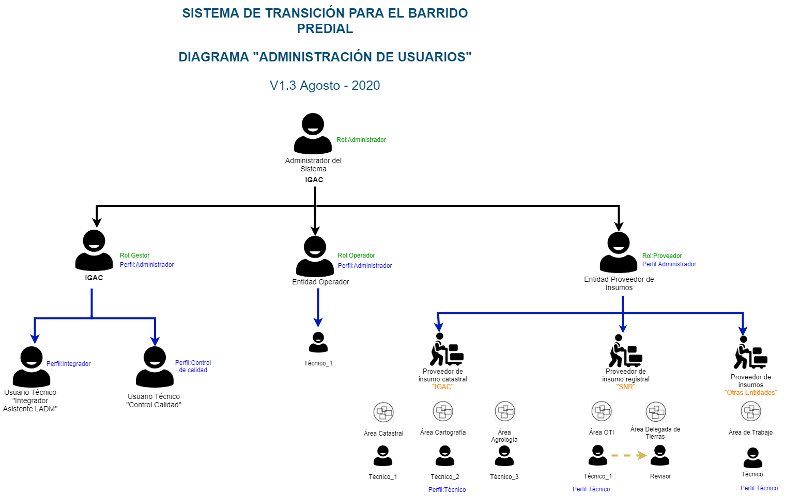

Jerarquía de Usuarios¶
El sistema de transición se define a partir de roles y subroles a conocer:

De la anterior imagen se evidencia los siguientes roles:
Super Administrador:
Permite crear los administradores del sistema, este usuario actúa como un usuario de inicio en el sistema.
Administrador: Ejecuta funciones como autoridad catastral tales como:
Entregar insumos a los gestores
Asignar gestores a los municipios
Crea usuarios con rol Gestor, Proveedor y Operador
Crea entidades gestoras, proveedores de insumo y operadores
Gestor: Ejecuta funciones de gestor tales como:
Asignación de operador al municipio en el cual esta asignado
Realiza solicitudes de insumos a los proveedores
Entrega insumos a los operadores
Realiza procesos de integración catastro-registro
Operador: Ejecuta funciones de operador tales como:
Descarga de insumos para comenzar el barrido predial
Generación de reportes a partir de una entrega hecha por el gestor
Proveedor: Ejecuta funciones de proveedor de insumo tales como:
Recepción de solicitudes y peticiones por parte de gestores
Cargue y disposición de insumos a gestores
Caracterización de insumos
Adicional a los roles algunos de ellos cuentan con subroles con funcionalidades especificas:
Gestor-Integrador: Lleva a cabo el proceso de integración a través del Asistente LADM-COL
Proveedor-Técnico: Lleva a cabo las tareas de cargar insumos al sistema.